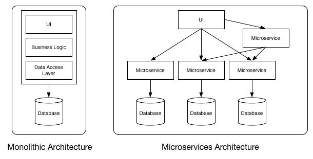
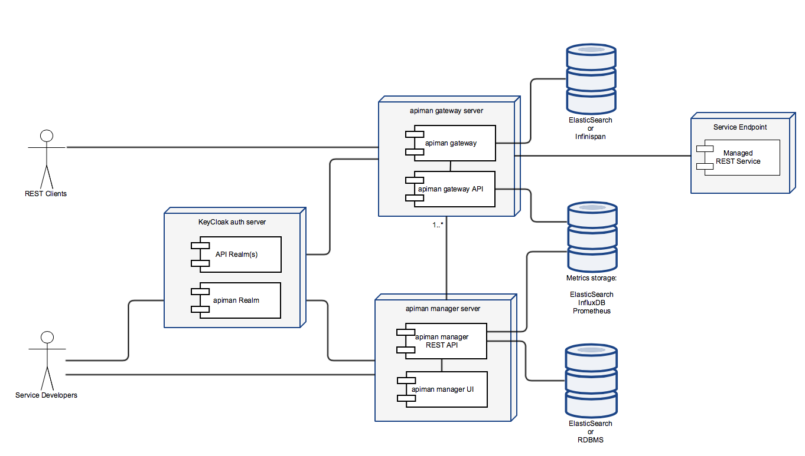
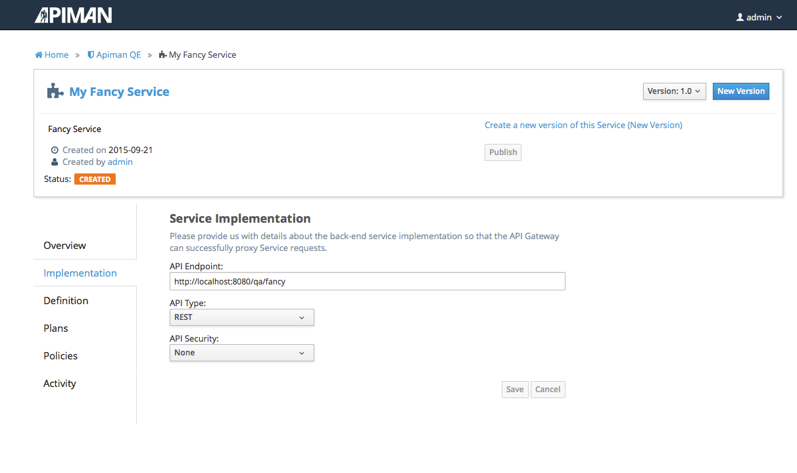
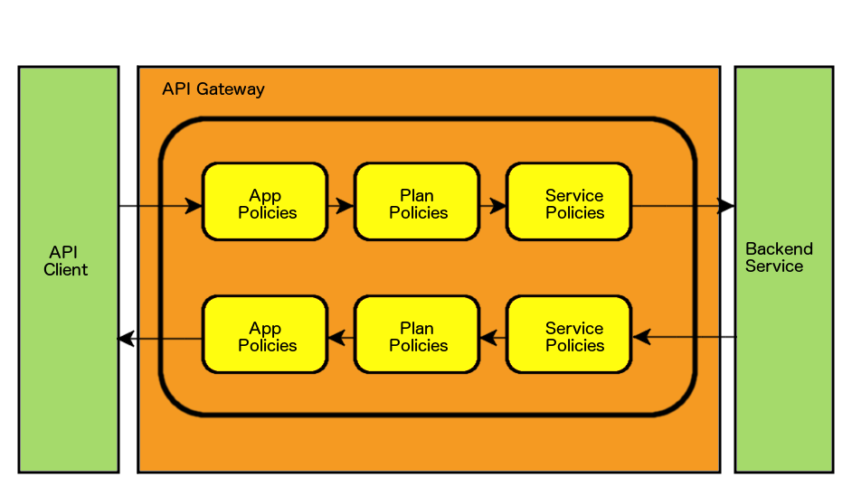

API Management with JBoss Apiman
Jakub Čecháček <jcechace@redhat.com>
Lecture Overview
Why do we need API Management?
What is JBoss apiman?
Architecture
Data Model
Policies available OOTB
APIs, APIs Everywhere
Service Oriented Architecture (SOA) is often used
It’s easier to compose new applications from existing APIs
Single business logic
Multiple clients
SOAP, REST, or any other RESTful API
Microservices on the way
Each service is deployed separately
Implementing only narrow functionality
SOA done right!
Large number of (micro) services
Cross cutting concerns
Micro Vs. Mono

Why API Management?
Authentication and Authorization
Usage statistics
Limiting access to your API
Version management
Billing
Additional layer of request/response control
JBoss apiman
Open source API management tool
Young and rapidly growing project
Current version is 1.1.8.Final
Advantages
Rich management Layer
Easily embeddable and extensible
Fully asynchronous
Built with Scalability in mind
Configuration in single property file
Architecture

API Manager
Sort and structure your APIs
Set of REST endpoints
Configuration time
Management UI
Provides an easy way to configure your API management
Lightweight angular.js application
Under the hood utilizes manager’s REST API
Management UI

API Gateway
A proxy between client and APIs
Multiple platforms (servlet, vert.x)
Applies policies to API requests
Execution time
Policies
Rules applied on request / response at runtime
Manipulate request / response headers
Manipulate the payload data

Manager Vs. Gateway
Gateway REST API
Configuration is published (pushed) to gateway
Once published service can’t be modified
Entity Hierarchy
Organizations
Top level structure unit
Representation of a company, department, team,…
Consumed and Provided APIs
Roles & Permissions
Service, Plan, Application
View / Edit / Admin
Auto-granted roles
Out of the Box Roles
Organization owner
Application developer
Service provider
Services
Representation service provider
Backed by REST or SOAP endpoint
Version management
Accessing to Services
Public service accessible to anyone
Service available through plan to registered consumers
Plans
Set of defined policies
Way to share policy configuration between services
Way to distinguish between categories of your consumers
Applications
Counterpart to Services
Representation of service consumer
Application can consume multiple services
Contracts
Application, Service, Plan
Form of subscription
Application is assigned a unique API key
Policy Chain

Versioning
Is supported on each level: Application, Service, Plan
Version needs to be pushed to the Gateway
register / publish / lock
Out of the Box Policies
Rate Limiting
Throttle the number of requests to your API
User, Application, Service
Per unit of time (second, minute, hour, etc…)
Transfer Quotas
Throttle the amount of data transfered through your API
Download, Upload, Combined
User, Application, Service
Per unit of time (second, minute, hour, etc…)
Ignored Resource
Disable parts of your API
Support for regular expressions
IP Address Filtering
Two policies (Whitelist and Blacklist)
List of IP addresses with allowed / denied access
Support for wildcards
Plugins
Java Web Archive (WAR) with JSON descriptor
Distributed through maven
Search local repository first
Plugin registry
Plugin registry
Simple JSON Descriptor
Maven repository
List of plugin artifacts
registry.json
{
"name" : "Official apiman Plugins",
"description" : "This plugin registry lists all of the official apiman plugins. No third party plugins are included in this registry.",
"version" : "1.2.0-SNAPSHOT",
"repository" : {
"name" : "JBoss Public Maven Repository",
"url" : "http://repository.jboss.org/nexus/content/groups/public/"
},
"plugins" : [
{
"groupId" : "io.apiman.plugins",
"artifactId" : "apiman-plugins-cors-policy",
"version" : "1.2.0-SNAPSHOT",
"name" : "CORS Policy Plugin",
"description" : "This plugin implements CORS (Cross-origin resource sharing): A method of controlling access to resources outside of an originating domain."
},
{
"groupId" : "io.apiman.plugins",
"artifactId" : "apiman-plugins-http-security-policy",
"version" : "1.2.0-SNAPSHOT",
"name" : "HTTP Security Policy Plugin",
"description" : "Provides a policy which allows security-related HTTP headers to be set, which can help mitigate a range of common security vulnerabilities."
}
]
}What’s to come?
Billing support
Developer portals
Support for WebSocket
Support for Messaging
Get Involved
Homepage: http://www.apiman.io
Sources: https://github.com/apiman/apiman
Mailing list: apiman-user@lists.jboss.org
IRC channel: #apiman on Freenode